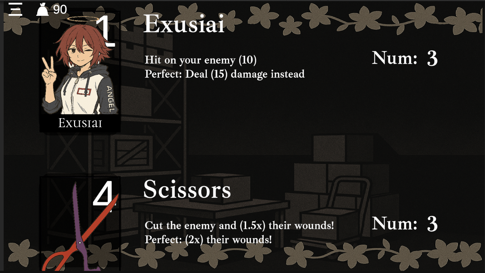
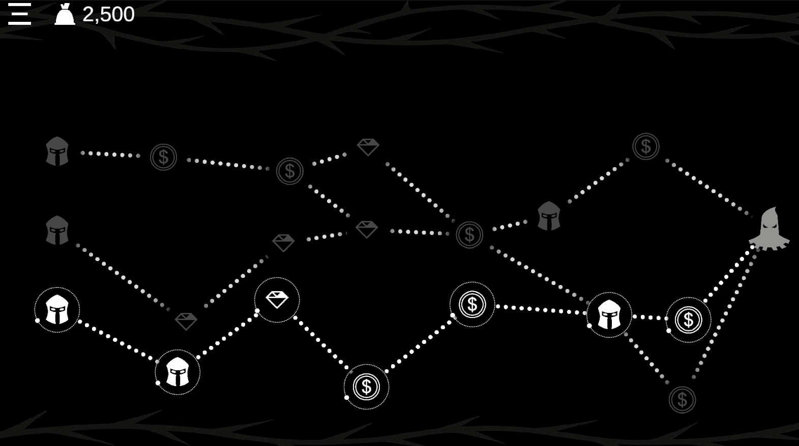
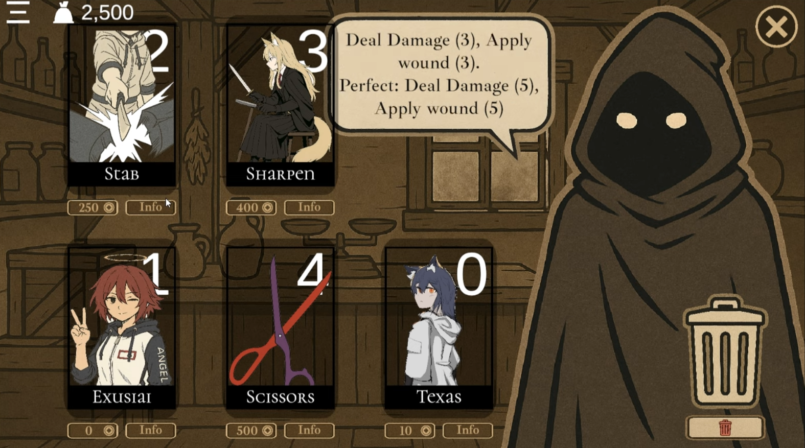
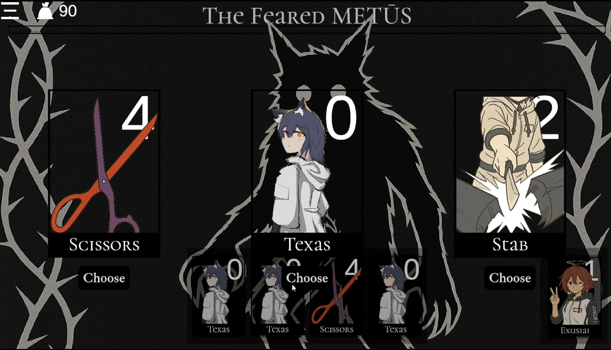
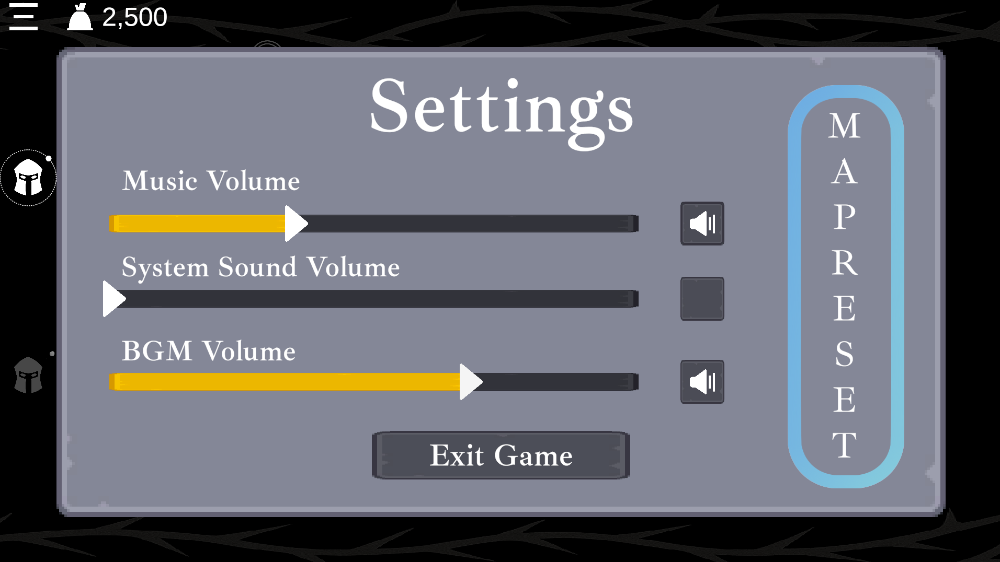

节奏卡牌游戏 on Unity
开发周期: 2 周
一个节奏与卡牌战斗结合的游戏，玩家需要在节拍中击打并使用卡牌进行策略性战斗。
合理在战斗外规划卡组，在战斗中分配策略才能帮助自己得心应手地在节拍上及时使用卡牌，发挥最大效果。
在开发过程中，我决定加入类似《杀戮尖塔》的roguelike体验。
核心功能与特色
节拍同步
使用 AudioSettings.dspTime 实现精确的节拍时间。
基于 ScriptableObject 的节拍表系统。
实时精确的节拍生成启动 搭配 Queue 逻辑的节拍打击检测以实现每次运行都在准确时间检测玩家的输入是否合法
在Fever 系统中，玩家可以进入一个特殊状态，在该状态下所有节拍输入都会被判定为完美，卡牌将发挥最大效果。
卡牌系统
模块化卡牌效果、使用限制和动画反馈。
通过 ScriptableObjects + prefabs 实现易于扩展。
战斗中可添加/移除卡牌。
使用自定义着色器实现溶解动画。

敌人与状态效果系统
动态敌人状态机与健康值/名称更新。
实现了敌人的负面状态效果如流血等，由卡牌触发。
节点地图系统
可解锁的路径进程
房间分为5种: 宝藏, 商店（购买、删除卡牌）, 常规战斗, 精英战斗, 以及首领关卡。

UI & 反馈
为生命流逝、牌库浏览与货币获取添加了流畅的 UI 动画
战斗反馈与节拍同步，增强玩家体验。

奖励系统
每场战斗后选择卡牌奖励 ("可设定从N张卡中添加1张至牌库")。

音频设置
可调节游戏内音乐、音效和背景音乐的音量。

亮点
ScriptableObjects驱动框架；
动态牌库抽取/预览下一张抽取卡牌的系统；
音乐节奏上的游戏体验。